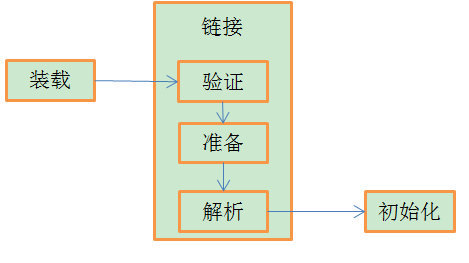

概述
Java虚拟机把描述类的数据从Class文件加载到内存，并对数据进行校验、转换解析和初始化，最终形成可以被虚拟机直接使用的Java类型，这就是虚拟机的类加载机制。
与其他语言不同的是在Java语言里，类的加载、连接和初始化过程都是在程序运行期间完成的，Java里可动态扩展的语言特性就是依赖运行期动态加载和动态连接这个特点实现的。
类加载的三个阶段
Java类加载分为三个阶段，分别是：加载、连接、初始化；其中连接阶段又可以分为三个阶段，这三个阶段分别是：验证、准备、解析。类加载的三个阶段可如下图所示：

Java虚拟机规范中并没有规定什么时候开始进行加载，这点交由虚拟机自己实现，但是对于初始化阶段，虚拟机规范则进行了严格的规定。
Java虚拟机规范中规定以下六种情况必须立即对类进行初始化：
- 遇到new、getstatic、putstatic、invokestatic这四条字节码时，如果类没有进行过初始化，则需先触发其初始化；
- 使用java.lang.reflect包的方法对类进行反射调用的时候，如果类还没有进行初始化，则需要先触发其初始化；
- 当初始化一个类时，其父类还没有进行过初始化，则需要先触发其父类的初始化；
- 对一个类或接口的静态变量进行访问或者赋值操作时，这个类或者接口还没有进行过初始化，则需要先触发其初始化；
- 当虚拟机启动时，用户指定一个需要执行的主类，虚拟机会先初始化这个主类；
- 当调用一个类的静态方法时，这个类还没有进行过初始化，则需要先触发其初始化；
Java虚拟机规范中规定的这六种情况触发的初始化情景称为对一个类的主动引用。除此之外，所有引用类的方式都不会触发初始化，称之为被动引用。
被动引用的几个个例子：
- 通过子类引用父类的静态字段，不会导致子类初始化
1 | class Father{ |
- 通过数组定义类引用类，不会触发此类的初始化
1 | class A{ |
- 常量在编译阶段会存入调用类的常量池中，本质上没有直接引用到定义常量的类，因此不会触发定义常量的类的初始化
1 | class A{ |
类加载过程
加载阶段
加载是类加载过程的一个阶段，类加载阶段需要完成以下三件事情：
- 通过一个类的全限定名来获取定义此类的二进制字节流；
- 将这个字节流所代表的静态存储结构转化为方法区的运行时数据结构；
- 在内存中生成一个代表这个类的java.lang.Class对象，作为方法区这个类的各种数据的访问入口；
加载阶段生成的Class对象是一个Java对象，在Java虚拟机规范中并没有规定这个Class对象存放在哪个内存区域，对于HotSpot虚拟机而言，它将Class对象存放在了方法区中。
虚拟机规范中也没有规定被加载类的来源，类可以从本地磁盘中加载也可以从内存中加载还可以从网络中加载，总之规范中没有规定加载类的来源，只要被加载的类符合虚拟机规范的类文件结构，那么这个类就可以被加载。
连接阶段
在加载阶段完成后，虚拟机外部的二进制数据就会按照虚拟机所需要的格式存储在虚拟机的方法区中，接着开始连接阶段，连接阶段分为验证、准备、解析三个阶段；
验证阶段
验证阶段是为了确保Class文件的字节流中包含的信息符合当前虚拟机的要求，并且不会对虚拟机自身安全造成危害。
当验证不通过时，虚拟机应当抛出一个java.lang.VerifyError异常。
虚拟机首先会进行文件格式验证，文件格式验证会对以下几个方面进行验证：
- 是否以魔数0xCAFEBABE开头；
- 类的主次版本号是否在当前虚拟机处理范围之内；
- 常量池的常量是否含有不被支持的常量类型；
- 指向常量的各种索引值中是否有指向不存在的常量或者不符合类型的常量；
- 其他二进制字节流的验证。
文件格式验证完后，然后开始元数据验证，元数据验证是对字节码描述的信息进行语义分析，保证不存在不符合Java语言规定的元数据信息，包括：
- 这个类是否有父类；
- 这个类的父类是否继承了不允许继承的类；
- 如果这个类不是抽象类，是否实现了父类或者接口之中要求实现的所有方法；
- 类中的字段、方法是否与父类产生矛盾；
- 其他语义验证。
元数据验证后，开始进行字节码验证，字节码验证主要是通过数据流和控制流分析，确定程序语义是合法的、符合逻辑的。这阶段会对类的方法进行校验分析，保证被校验类的方法在运行时不会做出危害虚拟机安全的事件。
字节码验证后，进行验证阶段最后一个验证：符号引用验证，符号引用验证可以看作是对自身以外的信息（常量池中的各种符号引用）进行匹配性校验。符号引用验证的目的是确保解析动作能正常执行。
准备阶段
准备阶段是正式为类变量分配内存并设置类变量初始值的阶段，这些变量所需要的内存都将在方法区中进行分配。这时候进行内存分配的仅包括类变量（被static修饰的变量），而不包括实例变量，实例变量将会在对象实例化时随着对象一起分配在Java堆中。这里说的初始值通常情况下是数据类型的零值，假设定义了一个变量：
1 | public static int value = 123； |
变量value在准备阶段初始化值为0，而不是123，将变量赋值为123是在初始化阶段才会执行。
基本数据类型的零值：
| 数据类型 | 零值 |
|---|---|
| int | 0 |
| long | 0L |
| short | 0 |
| char | ‘\u0000’ |
| byte | 0 |
| boolean | false |
| float | 0.0f |
| double | 0.0d |
| reference | null |
如果这个变量是个常量，那么这个变量在准备阶段就会被赋值，如：
1 | public static final int value = 123； |
变量value在准备阶段就会被赋值为123。
解析阶段
解析阶段是虚拟机将常量池内的符号引用替换为直接引用的过程。
符号引用：符号引用以一组符号来描述所引用的目标，符号可以使任何形式的字面量，只要使用时能无歧义地定位到目标即可。符号引用于虚拟机实现内存布局无关，引用的目标不一一定已经加载到内存中。
直接引用：直接引用可以使直接指向目标的指针、相对偏移量是一个能简介定位到目标的句柄。
解析动作主要针对类或接口、字段、类方法、接口方法、方法类型、方法句柄和调用限定符7类符号引用进行。
类或接口的解析
判断所要转化成的直接引用是对数组类型，还是普通的对象类型的引用，从而进行不同的解析。字段解析
在对字段进行解析前，会先查看该字段所属的类或接口的符号引用是否已经解析过，没有就先对字段所属的接口或类进行解析。在对字段进行解析的时候，先查找本类或接口中是否有该字段，有就直接返回；否则，再对实现的接口进行遍历，会按照继承关系从下往上递归（也就是说，每个父接口都会走一遍）搜索各个接口和它的父接口，返回最近一个接口的直接引用；再对继承的父类进行遍历，会按照继承关系从下往上递归（也就是说，每个父类都会走一遍）搜索各个父类，返回最近一个父类的直接引用。类方法解析
和字段解析搜索步骤差不多，只不过是先搜索父类，再搜索接口。接口方法解析
和类方法解析差不多，只不过接口中不会有父类，因此只需要对父接口进行搜索即可。
初始化阶段
类加载阶段的最后一个阶段就是初始化阶段，初始化阶段是执行类构造器<clinit>()方法的过程。
<clinit>()方法是由编译器自动收集类中的所有变量的赋值动作和静态语句块中的语句合并产生的，编译器收集的顺序是由语句在源文件中出现的顺序决定的，静态语句块中只能访问到定义在静态语句块之前的变量，定义在它之后的变量可以赋值，但是不能访问。
<clinit>()方法与类构造函数不一样，它不需要显示的调用父类的构造器，虚拟机会保证子类的<clinit>()方法执行之前，父类的<clinit>()已经执行完毕。
由于父类的<clinit>()方法先执行，所以父类的静态语句块优于子类的变量赋值操作。
<clinit>()对类或者接口来说并不是必须的，如果一个类没有静态语句块，也就没有对变量的赋值操作，那么编译器不会为这个类生成<clinit>()方法。
接口中无静态语句块但是有赋值操作，因此接口也会有<clinit>()方法，但是接口的<clinit>()方法只用当子类和实现类中定义的变量有使用时才会执行<clinit>()方法。
<clinit>()方法是线程安全的。
参考文献
《深入理解Java虚拟机:JVM高级特性与最佳实践》 周志明著
本文首发于我在万达摆地摊's blog，转载请注明来源